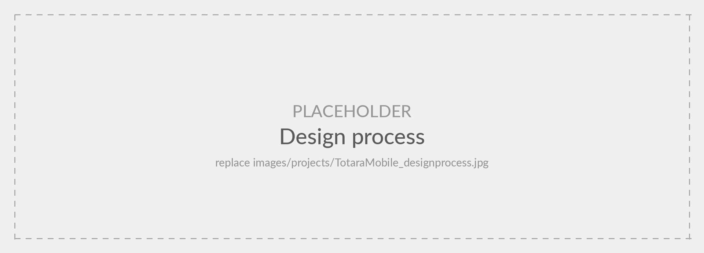
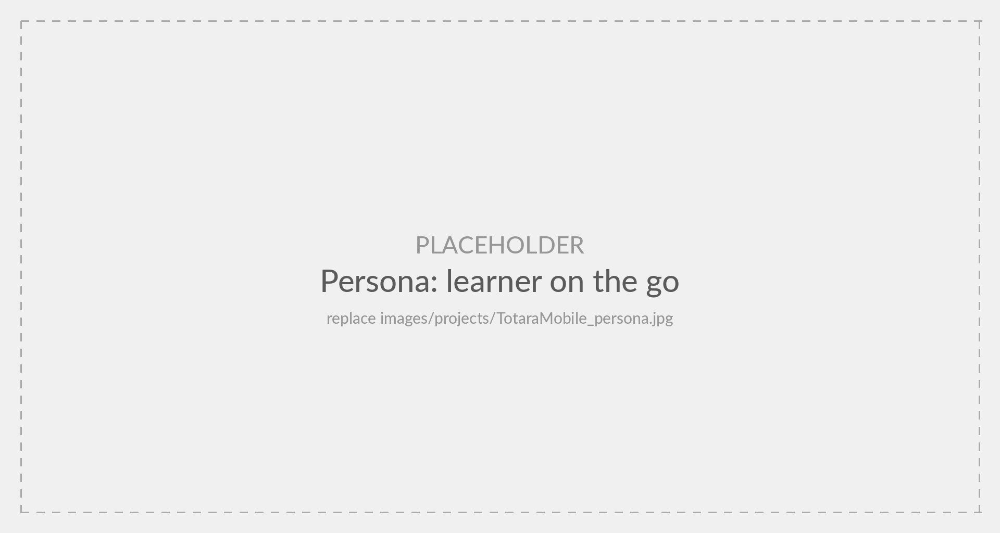
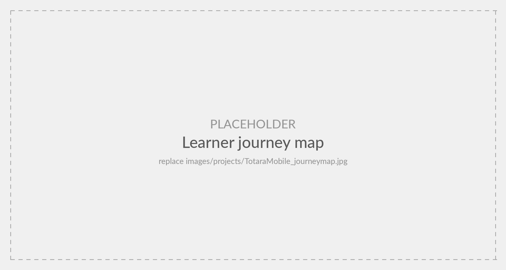
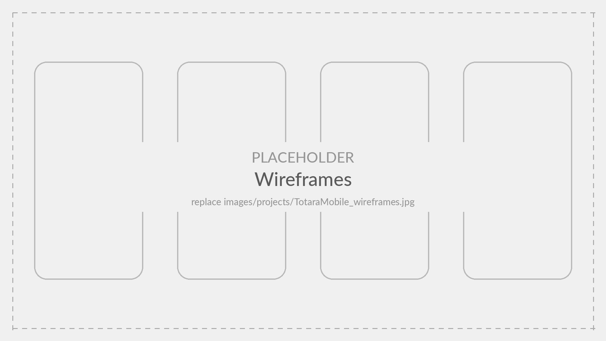
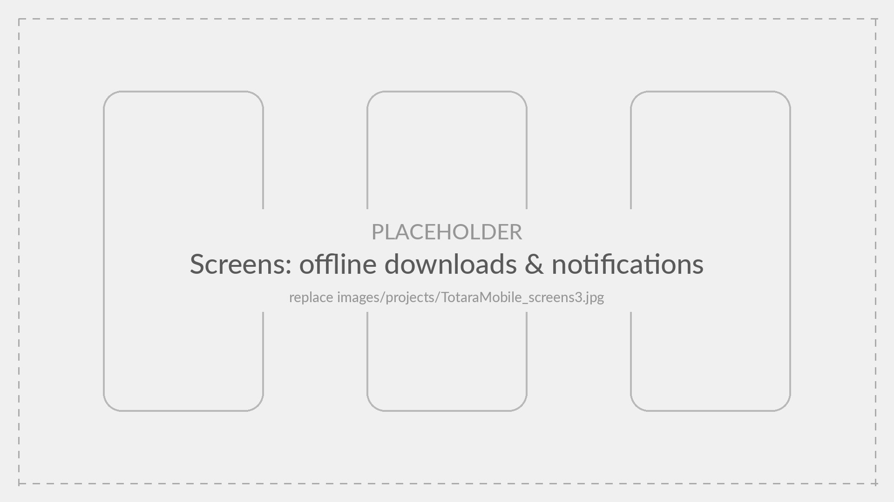

Statement of Originality & Confidentiality
To comply with my non-disclosure agreement, I have omitted and obscured confidential information in this case study, including customer names and real data. All the below information belongs to the organization whose name appears on the document and is to be treated as confidential. It is used to demonstrate my work experience and related skills. Please do not disclose any information to any person or persons who would use it for the purpose outside the possibility of employment.
OVERVIEW
Totara Mobile is the native iOS and Android app for the Totara learning platform. It gives learners their learning wherever they are: they can see what they need to complete, work through courses on their phone, download learning to finish offline, and get reminders when something is due.
Totara is a learning, performance and compliance platform
used by organisations worldwide.
Every organisation runs its own Totara site, so the app had to connect to each customer's site and feel like their product, with their branding and their content. [Add timeframe and which releases/features you worked on]

CHALLENGE
Many learners don't sit at a desk all day. They work on shop floors, in hospitals and out in the field, often with patchy connectivity and only a few minutes to spare. [Confirm these learner groups] Their learning, much of it compliance training with deadlines, was built for the desktop. The challenge was to make that learning quick and easy to complete on a small screen, work reliably offline, and serve many different organisations from one app, each with its own site, configuration and brand.
“Learning should fit into the gaps in a working day.”
MY ROLE & DESIGN PROCESS
I designed the end-to-end experience of Totara Mobile, from signing in and connecting to an organisation's site, to finding and completing learning on the go. I worked closely with product owners, mobile developers and customers, and kept the app consistent with the Totara UI Kit design system. [Adjust to your exact scope: features you owned, team size]
I partnered with product on discovery workshops, research and journey mapping, so the app was shaped around how learners actually use their phones at work.

Discover
Research with learners & customers
Together with the product owners, I spoke with customers and learners to understand when and where people learn, what devices they use, and what stops them completing their learning on time. [How many interviews / customers / industries?]
Reviewing the web experience
I reviewed how learners use Totara on the web today, which tasks matter most on the go, and which parts of the desktop experience didn't make sense on a phone.
Key Insights
[Check these match what you found, and edit]
• Learners mostly open the app to answer one question: "What do I need to do next?"
• Sessions are short and often interrupted.
• Connectivity is unreliable in many workplaces.
• Learners can miss due dates without a timely reminder.
• Organisations want the app to look like their own brand.

Persona: the learner on the go

Learner journey map
Define
Journey mapping
We mapped the learner's journey from first opening the app, through signing in to their organisation's site, to finding, completing and tracking learning. This showed the moments where the app could help most.
Application map
I created an application map to agree the structure of the app with the team: what lives on the home screen, how learners move into a course and back, and where downloads and notifications sit.
Key Decisions
• Put "current learning" first, ordered by what is due soonest.
• Make offline a first-class feature: clear download controls and progress that syncs when back online.
• Keep sign-in simple, including connecting to the right organisation's site.
• Let each organisation apply its own branding.

Application map
Design
Wireframes
I sketched and wireframed the key flows (sign in, current learning, course and activity, downloads) and reviewed them with product owners and developers early, so we could check what was technically possible on each platform.
Prototype & testing
The flows were turned into clickable prototypes in Figma and tested with learners and customers. [What did you learn and change?]
Visual design & design system
The visual design follows iOS and Android conventions while staying recognisably Totara, using shared colours, type and components from the Totara UI Kit, and supporting each organisation's brand colours.

Wireframes of the key flows

Sign in and connect to your organisation's site

Current learning and course

Offline downloads and notifications

One app, many organisations: customer branding
OUTCOME
Totara Mobile is available on the App Store and Google Play, letting learners at Totara's customers complete their learning on their phones, online or offline. [Add results: downloads, customers using it, completion rates, ratings or feedback]
REFLECTION AND NEXT STEP
[Your reflection: what you learned designing one app for many organisations, and what you'd do next]